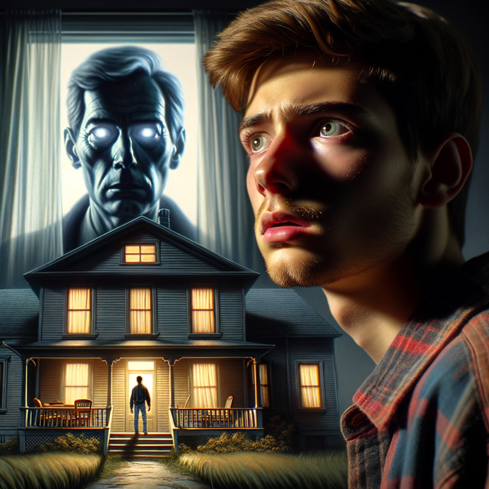
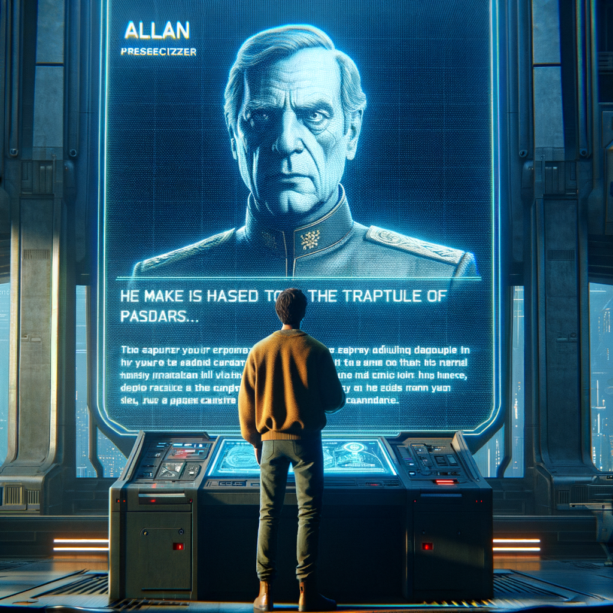
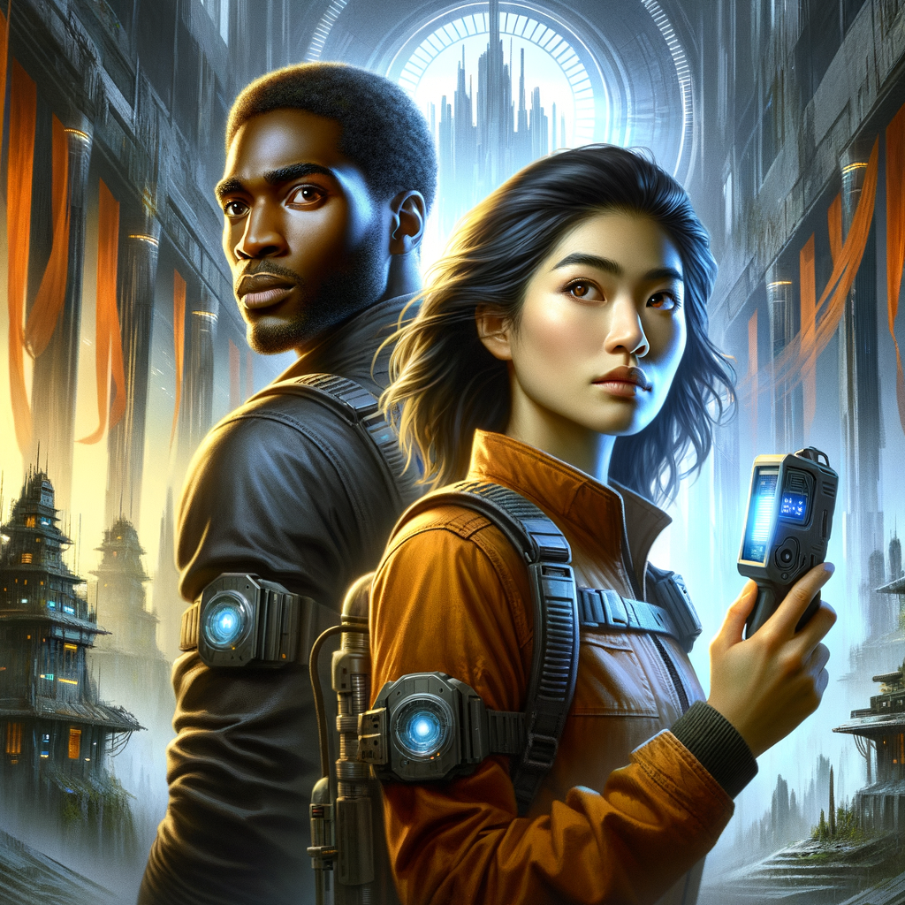
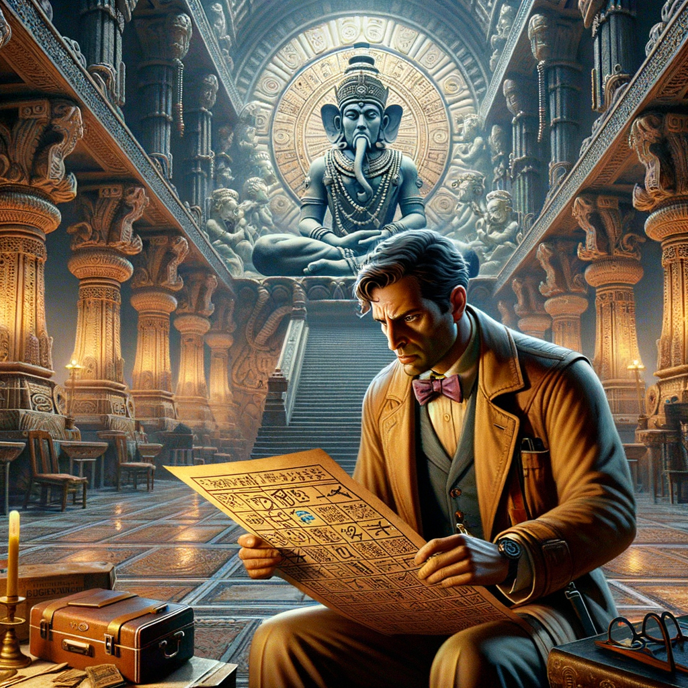
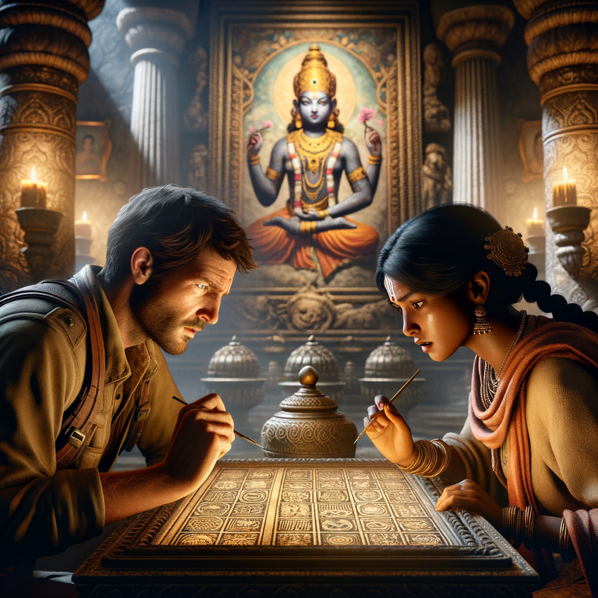
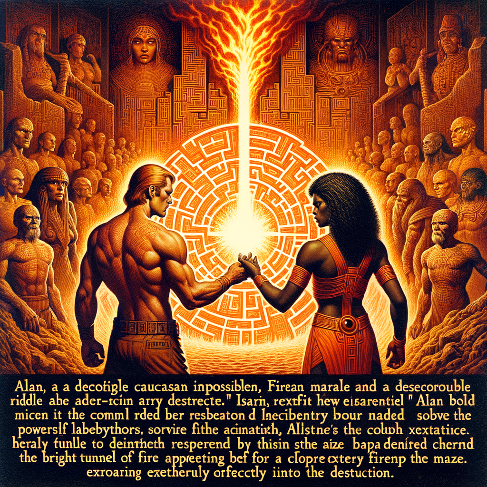
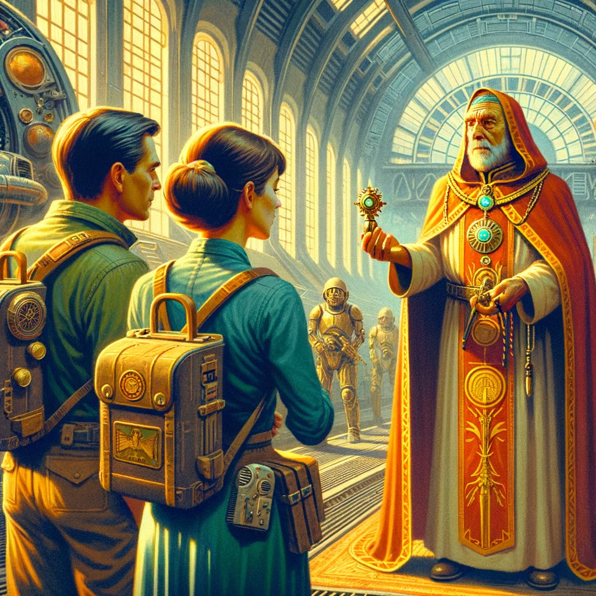
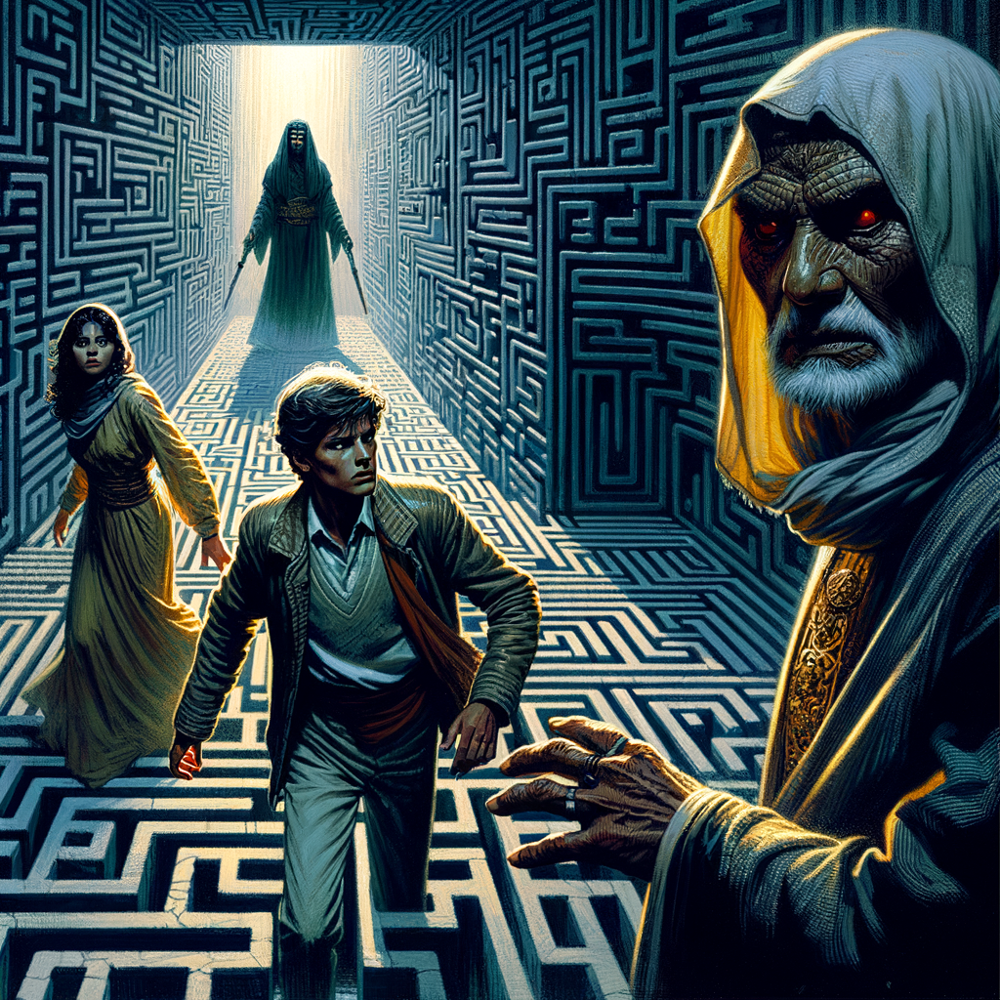

Allan is a young man living with his parents in the large futuristic planet city of Couscan. His parents Karina and John are quite well known politicians with liberal attitudes and firm believers in the ideas of the republic. One day Allan comes home from school and something seems to be out of place. His mother Karina and his father John are not at home. Tehir, their maid also does not know where they are. Allan starts to get worried as there are no signs of his parents. It is at this moment that he gets a holographic call from Isar, a military leader, befriended with his family who tells him to keep calm and that his parent are held prisoners in the Temple of the Guardians. Allan heard about the ancient Temple of the Guardians which is an old abondoned temple in Couscan with a huge maze. Isar tells him to come with him to rescue them and Allan immediately joins him. Allan and Isar travel to the abandoned temple of the Guardians and enter it. Isar is taking with him a sensor to detect humans in the hope to track his parents in the maze. Allan and Isar detect some signals in the maze and start to follow them. At a certain stage they enter a chamber with the statue of the ancient God Brahma, the creator. There is a message in this chamber "To know the Shadows and the Light is the Way". The chamber is totally closed off, just one entry and nothing else. But Allan discovers the hint and manages to find a hidden corridor based on this message. They now reach another chamber, the chamber of another deity Vishnu which presents another riddle: "To know the way is to know the one in the middle". After some thinking both figure out that this is the hint to find another secret passage. Finally they traverse and reach another passage, the passage of another deity, the God of Destruction. Again there is a message in this chamber "Only the one who walks through fire will find the way.". There is indeed a picture of a fire in this chamber, and Allan and Isar figure out the way to understand the meaning of the riddle and the picture and find another tunnel leading to the corridor where they find their parents and a high priest of the old order the Guardians. His parents are sleeping, aparently, drugged. The high priest explains them that he wants to re-instate the old order of the Guardians. He wants to ressurrect the past. After a fight Allan and Isar are able to re-awaken his parents, and also to flee the maze by tracing back their. The high priest however disappears in the maze and is never seen again, but vows to come back. The menace of the past remains hidden in the maze.
|  | |:--:| The Disappearance at Home
Allan's return home from the academic center was typically mundane, a routine punctuated by the metropolis’s humming transports and the soft glow of the setting twin suns of Couscan. On this day, however, as Allan stepped through the sleek portal of his domicile, the customary welcoming cacophony of his parents’ vociferous political debates was conspicuously absent. Silence, an uneasy visitor in the home of John and Karina, now loomed with palpable presence.
The domicile, a blend of Couscanian modernity and Earth-like tradition, reflected his parents’ penchant for merging the best of interstellar cultures. It was a place where political discourse was as much a fixture as the holographic art installations that lined the walls. Yet now, motion sensors failed to cue the lights, and the air hung with a stillness that heralded the unusual.
Allan called out, "Mother? Father?" His voice echoed through the open-plan living quarters, finding no reply. The domestic automaton, Tehir, swiveled into view, her optical sensors blinking with what Allan could only interpret as robotic concern.
"Master Allan," Tehir intoned in her modulated voice, "your progenitors are currently unaccounted for."
A frown creased Allan's brow as he queried, "Have they left any message? A note? Anything?"
"Negative," Tehir replied, her head tilting slightly. "I have been unable to establish contact with Master John and Mistress Karina since approximately 1300 hours."
With a growing unease, Allan moved through the rooms, activating panels and interfacing with the domicile’s central system in search of clues. Karina and John were not merely his parents; they were pillars of the Couscanian Republic, their absence tantamount to a political anomaly. Such a sudden void in the societal structure could ripple into unrest if not addressed with haste.
As Allan navigated the silence of the home, his hand brushed against a small, unobtrusive statuette of the Goddess Athena, epitome of wisdom and strategy. His mother had placed it there as a reminder of human heritage, a touchstone amidst the alien architecture. But now, its stoic gaze only seemed to accentuate the mystery.
The home yielded no answers, no sign of struggle or departure. It was as though Karina and John had simply ceased to exist within those walls. Allan, a young man of science and logic, found himself drawing upon the mythic for explanation, as if Athena herself might offer some divine insight.
It was then that the air shimmered, coalescing into the unmistakable form of a holographic transmission. The figure of Isar materialized, a stark contrast against the minimalist background, his military regalia betraying the gravity of his call.
"Allan," Isar's image began, his tone betraying urgency beneath a veneer of composure, "I bring news of concern regarding your parents."
Allan's heart skipped. "Isar, what has happened? Where are they?"
The hologram flickered as Isar exhaled, a gesture of grim resolve. "They have been taken to the Temple of the Guardians. It appears to be an abduction, likely politically motivated given their influence. I need you to remain calm and trust me. We will bring them back."
"The Guardians?" Allan's thoughts raced. The ancient order was a relic of Couscan’s past, a shadowy myth that parents used to instill obedience in their offspring. They were said to be watchers, intermediaries between the divine and the mundane. But to consider them a tangible threat was as alien to Allan as silence was to his home.
"Yes," Isar confirmed. "The Temple is abandoned, but it seems someone wishes to resurrect the past. We must act quickly."
Allan's resolve hardened, forged by the same steel that had seen his parents navigate the treacherous waters of Couscanian politics. "I will come with you," he declared, a statement rather than a request.
"Prepare yourself. We leave within the hour," Isar instructed before his hologram dissipated, leaving Allan once again enveloped in the eerie calm.
As Allan prepared for the unexpected journey, he could not shake the sense of an impending ordeal, one that would test him beyond the academic rigors to which he was accustomed. The myths of the Guardians, the labyrinthine Temple, and the cryptic absence of his parents coalesced into a singular, unnerving reality.
With a final glance at Tehir, who hovered with quiet anticipation, Allan steeled himself for the journey ahead. A journey that would lead him into the heart of Couscan’s forgotten history, where riddles of the divine awaited those daring enough to unravel them.
The home stood silent, a mute testament to the events that had transpired, and to those that were yet to unfold. Allan stepped out, leaving the stillness behind, his every step a defiant echo in the quietude that had claimed his parents' abode.
|  | |:--:| The Holographic Summons
Allan's hands were trembling slightly as he activated the console. The holo-emitter on the desk flickered to life, projecting a three-dimensional image of Isar, the steely-eyed military leader whose reputation for upholding the law was known throughout Couscan. Allan always thought Isar's face seemed to be chiseled out of the same unyielding stone as the statutes that lined the ancient temple halls; his presence, even in holographic form, commanded immediate attention.
"Isar," Allan began, his voice betraying the panic he felt inside, "what's happened to my parents?"
Isar's image flickered with the distortions of transmission lag before it stabilized. "Allan, I wish we had more time for pleasantries, but I'm afraid the matter at hand is urgent. Your parents have been taken—captured by an unknown faction. We believe they are being held within the Temple of the Guardians."
The Temple of the Guardians—an enigma wrapped in the midst of Couscan's sprawling urban landscape, a relic from a time when mysticism and technology were indistinguishable. It was said that the temple was alive, a maze that breathed and shifted, reconfiguring its pathways for those deemed worthy... or unworthy.
"But, why? Why my parents?" Allan's confusion was evident as he grappled with the fragments of information.
Isar's expression softened ever so slightly. "Your parents are not merely politicians, Allan. They are symbols—symbols of the republic, of the liberty that many would wish to see extinguished. We've interceded to prevent such tragedies before, but this time, the culprits have gone to extraordinary lengths."
Allan's heart raced as he absorbed the gravity of Isar's words. "What can I do? I need to help them."
"Indeed. And that is why I have reached out to you. We require someone who knows them intimately, someone who can navigate the perils of the temple. The Guardians' technology is ancient and, in some cases, reacts to the lineage. You carry your parents' blood, Allan. You may be the key to unraveling the temple's secrets."
"But the temple is a labyrinth," Allan protested, his resolve hardening as he spoke. "Legends say that even the most advanced technology can't map its internal structure—it's always changing."
"Which is why I've secured a prototype human-sensing device. It's untested in such an environment, but we have no other options. Time is against us, Allan. We must act now if we are to save Karina and John."
Allan nodded firmly, pushing aside his fears. "I'll do it. I'll go with you."
Isar gave a curt nod of approval. "Prepare yourself. I will arrive within the hour to escort you to the temple. This will not be an easy task. The Guardians' maze is not only a physical challenge but a psychological one. The puzzles therein are reflections of the Guardians' philosophy, conceived to test the mental acuity and moral fiber of those who dare enter."
Questions swirled in Allan's mind. The Guardians had been enigmatic figures, their true intentions lost to history. Yet now, it seemed, he was to confront their legacy head-on. "What should I expect inside?"
"The temple is a place of trials, a crucible for those seeking enlightenment. Expect tests of logic, ethics, and courage. The Guardians believed in the balance of the cosmos, the interplay of creation, preservation, and destruction. Their riddles and traps will be based on these principles."
"And the high priest? What does he want with my parents?"
Isar's image flickered, casting long shadows across the dimly lit room. "The high priest is a zealot, a relic of a bygone era who seeks to resurrect the Guardians' order. Your parents' influence makes them valuable pawns in his pursuit of power. We cannot allow him to succeed."
Allan's resolve crystallized into determination. "We'll stop him. We have to."
Isar's holographic form seemed to stand taller, as if his confidence in Allan had bolstered his own stature. "Indeed, we will. Prepare yourself, Allan. The fate of your parents—and perhaps Couscan itself—now rests in our hands."
As the hologram faded, Allan was left alone with his thoughts. The silence of the room was a stark contrast to the tumultuous emotions within him. Yet, amidst the fear and uncertainty, a spark of hope ignited. Allan was not going to let his parents become the casualties of someone else's war.
The Guardians' maze awaited, a test of mind and spirit. Allan knew that to navigate its depths, he would need every ounce of his wits and will. But he was ready. For his parents, for Couscan, he would face the holographic summons.
(Note: The content reflects a fictional scenario reminiscent of Asimov's narrative style, blending technology with human emotion and ethical dilemmas. Since Asimov's works typically dealt with robotics and artificial intelligence, the chapter has been crafted to focus on the human element and a mysterious ancient technology that could resonate with the themes found in "I, Robot".)
|  | |:--:| The Journey to the Temple
Given the constraints provided, I will create content for Chapter 3 of a novel with a style inspired by Isaac Asimov's "I, Robot" while maintaining the original narrative of "Allan's Adventure in the Planet of Couscan." Here is the content for Chapter 3:
The sun of Couscan had dipped below the horizon, bathing the city in the artificial glow of its streetlamps and towering screens when Allan and Isar approached the decrepit facade of the Temple of the Guardians—a relic from a time when myths and machines were indistinguishable. The temple stood solemnly, a stark contrast to the humming modernity of the city around it.
Isar, clad in a military uniform that seemed to absorb the twilight, adjusted the settings on the human-sensing device. The gadget, a compact cylinder with a series of rotating rings, projected a holographic interface that spun lazily between his gloved fingers.
"Allan," Isar's voice was a low rumble, "stay alert. The device can guide us, but it cannot anticipate the temple's defenses."
Allan nodded, his apprehension a tight knot in his stomach. The urgency to find his parents was tempered by the unknown threats that lay ahead. The stories he'd heard about the Temple of the Guardians spoke of a labyrinth designed to test the worth of those who dared enter, but he had never imagined he would be one of those so tested.
The pair stepped through the gaping maw of the temple's entrance, the sensing device casting a pulsating light that carved a path through the shadows. The air was cool and still, as if the temple were holding its breath, watching the intruders with invisible eyes.
The maze unfolded before them, an intricate tangle of corridors lined with archaic symbols and dormant machinery. The human-sensing device directed them with unerring precision, leading them deeper into the heart of the structure. The walls seemed to whisper, their voices the echoes of a forgotten age.
As they delved further, the passages narrowed, and the air grew heavy with the scent of ancient stone and the tang of unseen energy sources. Allan's gaze flitted between the sensor's display and the carvings that adorned the walls, each depicting scenes of cosmic order and chaos, creation and destruction.
Isar remained focused, his hand never straying far from the sidearm at his belt. "The Guardians were not mere priests," he muttered, "they were the keepers of balance, the bridge between the tangible and the ethereal. Their knowledge of robotics and the fundamental laws of the universe was unparalleled."
Allan considered Isar's words, the weight of history pressing down on him. His parents, advocates for the republic's principles, were prisoners within this enigma—a temple that had once harmonized the very forces that now threatened to tear Couscan apart.
The sensor emitted a sudden chime, and the holographic display shifted, revealing a complex pattern of human presence. They had reached the core of the maze, where the signal was strongest.
Before them loomed a vast chamber, its ceiling lost to shadow. The room was dominated by a towering statue of Brahma, the Creator, his four faces gazing impassively in each cardinal direction.
Isar eyed the statue warily. "The Chamber of Creation," he said. "We must be cautious."
Allan's attention, however, was drawn to the inscription at the base of the statue: "To know the Shadows and the Light is the Way." He circled the figure, searching for any clue that might reveal the path forward.
His study was interrupted by a soft thrumming—a sound that grew in volume until it resonated through the chamber. From the corners of the room, a series of ancient mechanisms sprang to life, casting beams of light that interlaced with the shadows to form a complex pattern on the floor.
Isar watched Allan's examination of the pattern. "The Guardians were masters of robotics and encoded their wisdom in puzzles," he observed. "Solve this one, and the way to your parents will be revealed."
Allan's mind raced, his thoughts a whirlwind of possibilities. He recalled his father's lessons on the duality of light and shadow, the balance necessary for understanding the universe. With a sudden flash of insight, he stepped into the pattern, his body casting a shadow that completed the sequence.
The ground beneath them shuddered, and a section of the chamber wall slid away noiselessly, revealing a hidden corridor. Allan's heart leapt. The human-sensing device confirmed their path: the signal was stronger now, leading them onward.
As they moved into the newly uncovered passage, Allan couldn't shake the feeling of eyes upon them, watching their every step. The Temple of the Guardians was more than a tomb of the past; it was a testament to the enduring legacy of knowledge and power—a legacy that now held his parents in its enigmatic grasp.
Isar placed a reassuring hand on Allan's shoulder. "We're close now. Stay vigilant." Together, they ventured deeper, their journey a thread woven into the fabric of Couscan's history, a story that would unravel in the chambers that lay ahead.
In this chapter, I have attempted to mirror Asimov's style by incorporating themes of advanced technology, human history, and the intersection between the two. The description of the temple's mechanisms and the puzzle that Allan must solve reflects Asimov's fondness for logical riddles and his fascination with robotics.
|  | |:--:| The Chamber of Creation
The walls of the chamber rose high above Allan and Isar, stretching into the shadowed ceiling lost in a dimness that the artificial lighting could not pierce. The statue of Brahma, the Creator, loomed in the center, its multiple arms splayed as if to embrace the cosmos, and its serene visage surveying the domain it oversaw.
Allan's eyes wandered across the inscription at the base of the statue, the cryptic message that had so far resisted their understanding. "To know the Shadows and the Light is the Way," he recited slowly, his voice echoing through the stillness of the ancient chamber.
Isar's gaze followed Allan's, his military training evident in the sharp focus of his eyes. "It's a clue, Allan. The Guardians were known for their love of puzzles and secrecy. This chamber... it must be a test."
Allan pondered the words, the Shadows and the Light. He stepped back, observing the chamber in its entirety. The walls were decorated with intricate carvings, scenes of creation, and destruction, of the rise and fall of civilizations. Yet, amid the chaos of depictions, Allan’s eyes were drawn to a peculiar inconsistency.
A panel, no larger than the breadth of his hand, seemed to absorb the light rather than reflect it. Allan approached, his fingers tracing the outline. It was deliberate, he realized; a shadow in the light, a piece of the chamber that defied the brilliance that sought to reveal all.
"Isar, look at this," Allan called, his heart rate quickening. Isar joined him, his own fingers running over the anomaly. "Indeed, a shadow in the light. But what does it mean?"
"Remember the message," Allan said, his mind racing. "Shadows and Light. This has to be part of it." He pressed against it, and to his surprise, the panel yielded beneath his touch, sliding aside with a whisper of ancient mechanisms long unused. A corridor, hidden from view, revealed itself to them.
Isar's eyes widened with approval. "Brilliant, Allan. The old tales spoke of the Guardians' penchant for concealing truth in plain sight. Let's proceed with caution."
The hidden corridor was narrow, the air stale with the weight of uncounted years. They advanced, their lights piercing the gloom, revealing nothing but the dust of ages that lay undisturbed upon the ground.
As they moved deeper into the temple's hidden veins, Allan's thoughts drifted to his parents. He imagined their fear, their uncertainty at being held captive for reasons unknown, and it fueled his determination to press on.
The passage ended abruptly in a small antechamber, its purpose unclear. Allan scanned the room, his eyes catching on a pedestal upon which sat a metallic disc, its surface etched with symbols that danced in the light of their torches.
Isar approached the pedestal, examining the disc. "It’s a cipher," he declared, his voice tinged with excitement. "The Guardians were not only spiritual leaders but also keepers of knowledge. This disc... it might hold the key to navigating the maze."
With careful hands, Allan rotated the disc, aligning the symbols as Isar read them aloud. "It's a map," Isar concluded, "a guide through the labyrinth. But it's incomplete. It requires a second piece."
A second piece. Allan's gaze lifted to the chamber, his eyes scanning for any clue, any hint of where it might be found. Then, his breath caught as he noticed a slight discoloration on the far wall, a shadow that seemed out of place.
He moved toward it, Isar at his heels. The shadow, upon closer inspection, was not a shadow at all but a shallow recess. Allan's fingers explored the space, and with a soft click, a compartment opened, revealing the missing piece of the cipher.
With the two parts united, the map took on a new clarity, and a route through the temple emerged. Allan handed the completed disc to Isar, who studied it intently. "This is it. It leads us to the Chamber of Vishnu, the Preserver. If we are to find your parents, that is our next destination."
The weight of the quest settled upon Allan, a mix of fear and resolve. He thought of his parents, of the high priest and his ominous intentions. They were in the heart of the temple now, in the grip of an ancient order that sought to reawaken the past.
Yet, as they prepared to follow the map, Allan felt a surge of confidence. The Chamber of Creation had yielded its secrets to them, and they had proven themselves worthy of its knowledge. With each step, with each riddle unraveled, they drew closer to confronting the shadows that had snatched his parents away.
Isar nodded to Allan, a silent acknowledgment of the bond forged in their shared purpose. "Let's move forward, Allan. The Chamber of Vishnu awaits, and with it, the next piece of this puzzle."
And with the resolved stride of those who walk the line between hope and despair, Allan and Isar left the Chamber of Creation behind, embarking on the path laid out by the ancient Guardians, toward the uncertain heart of the temple's mysteries.
|  | |:--:| The Middle Way
Chapter 5: The Middle Way
The chamber of Vishnu was bathed in an ethereal light that seemed to emanate from the deity's very essence. This was a place of balance, where the continuity of creation and preservation was celebrated. The statue of Vishnu stood serene and majestic, multiple arms radiating calm strength and wisdom. Allan and Isar entered the chamber with an air of reverence, their steps echoing softly against the ancient stone.
Isar glanced around the chamber, his military training scanning for any immediate signs of threat or egress. Allan, however, was drawn to the inscription that seemed to hover in the air before Vishnu's benevolent gaze. "To know the way is to know the one in the middle," he read aloud, his voice barely above a whisper.
Isar's eyes narrowed as he pondered the cryptic message. "The middle... it suggests a path of moderation or equilibrium. But where does that lead us in a physical space?"
Allan circled the statue, his fingers tracing the intricate carvings that adorned the deity's elaborate garments. "In the middle... Could it be something to do with Vishnu's position as the preserver, between Brahma the creator and Shiva the destroyer?"
The young man's eyes alighted on a panel that occupied the central position among a series of ornate decorations. It was slightly raised, as if inviting interaction, yet it betrayed no obvious mechanism or handle.
"Isar, look at this," Allan called out, gesturing to the panel. Isar joined him, scrutinizing the panel closely. "If Vishnu represents the middle way, then perhaps this is our next passage."
Encouraged by his companion, Allan pressed gently against the center of the panel. For a moment, nothing happened. Then, with the sound of stone grinding against stone, a section of the chamber wall began to shift, revealing a narrow passageway.
Isar's eyes lit up, the soldier within him alert and ready. "Well done, Allan. Let's proceed with caution."
The passageway was dimly lit by flickering lights that seemed to be of no discernible source. They cast an otherworldly glow on the walls, which were covered in frescoes depicting scenes from ancient mythologies. Allan and Isar moved forward, the air around them thick with the weight of history.
As they walked, Allan couldn't help but feel as though they were being watched. The eyes of the painted deities seemed to follow them, silently judging their worthiness. He shook off the feeling, focusing instead on the task at hand – to find his parents and understand the true intentions of the Guardians.
After what felt like an eternity, they emerged into a spacious antechamber. A sense of foreboding filled the space, a stark contrast to the chamber of Vishnu. Before them stood the next trial, the chamber that would test their resolve and their ability to interpret the cryptic wisdom of the ancients.
Allan glanced back at the passageway they had traversed, a moment of reflection passing through him. "The middle way," he murmured. "Not just a path to follow, but a method of thinking. Balance in mind and action."
Isar nodded solemnly. "It's a principle that can serve us well in times of conflict. And I have a feeling we'll need to remember it as we face the challenges ahead."
Together, they stepped into the antechamber, ready to unravel the mysteries that awaited them and to confront the fiery riddle that would lead them ever closer to Allan's parents and the heart of the Guardians' labyrinth.
The chamber of Vishnu had served not only as a test but as a guide, instilling in them the wisdom of the middle way. It was a lesson that would prove crucial in the trials to come, where extremes could lead to ruin, and only balance could provide the key to survival and understanding. The path ahead was fraught with danger, but Allan and Isar, armed with newfound insight, were prepared to face it head-on.
|  | |:--:| The Trial by Fire
Chapter 6: The Trial by Fire
Allan and Isar stood before the chamber of the deity of Destruction, a room lit with the flickering light of torches, casting shadows that danced upon the walls like specters at play. The air crackled with the heat of unseen flames, and Allan could feel sweat beading upon his forehead, though whether from the temperature or from the tension, he could not say.
Before them stood an imposing statue of the deity, its countenance fierce and unyielding, the stone seeming to pulse with an inner light as if it were alive with destructive energy. At the base of the statue, inscribed upon a bronze plaque, were the words that had brought them to this precipice of uncertainty:
"Only the one who walks through fire will find the way."
"I don't see any obvious traps or hidden doors," Allan said, his voice barely a whisper in the cavernous chamber. He had learned to trust his instincts, and they whispered to him that the solution to this riddle was not one of brute force or blind faith.
Isar, ever the military tactician, surveyed the room with practiced eyes. "There must be a mechanism or a trigger. These ancients were fond of their secrets, but they always left a path for the worthy."
Allan approached the statue, circling it with a mixture of reverence and curiosity. He noted the artistry of the sculpture, the way the deity seemed to be both a part of the inferno and its master, a being that could wield destruction yet remain untouched by its scorching embrace.
"The fire...," Allan murmured, his gaze fixed upon the picture of fire that adorned the wall behind the statue. It was a mosaic, composed of thousands of tiny tiles that shimmered in the torchlight. Allan reached out tentatively, half-expecting the image to be hot to the touch, but it was cool, as if mocking his trepidation.
Isar joined him, his interest piqued. "What is it?"
"The riddle," Allan replied, his mind racing. "It says to walk through fire, but that doesn't necessarily mean literal flames. There's something about this picture, some clue we're missing."
Together, they examined the mosaic, their eyes tracing the swirling patterns and the play of colors that seemed to suggest movement and life. Allan felt a growing sense of urgency, knowing that his parents' lives hung in the balance, and with them, the future of Couscan.
"Look at the edges of the tiles," Isar said suddenly, pointing to the irregular borders where the mosaic met the stone wall. "They're not flush. It's as if..."
"...as if the picture itself is a door," Allan finished, the realization dawning on him. He pressed his hand against the mosaic, feeling the edges of the tiles beneath his fingertips. Gently, he pushed, and to his astonishment, the picture began to slide inward, revealing a narrow passage that exhaled a breath of hot air.
"By the Guardians," Isar exclaimed, his voice a mix of admiration and disbelief. "The riddle was a metaphor. To walk through the fire was to pass through the image of it."
With no time to lose, Allan stepped into the passage, the heat enveloping him like a blanket. He could feel Isar close behind, and together, they navigated the tight corridor, the light from the chamber fading behind them.
The passage twisted and turned, the stone underfoot warm from the latent heat of the temple. Allan's heart pounded in his chest, not from fear, but from the thrill of discovery, of knowing that they were one step closer to his parents, and to unraveling the mystery of the Guardians.
After what felt like an eternity, the passage opened into another chamber, this one devoid of any statues or inscriptions. Instead, at its center lay two still figures, unmistakably human.
"Mother! Father!" Allan cried out, rushing to their sides. They were indeed his parents, Karina and John, their breathing shallow but steady, their faces serene in slumber.
Isar scanned the room, his sensor device coming to life with a series of beeps and lights. "They're alive, but sedated. We need to get them out of here."
Allan nodded, but as he did, a shadow detached itself from the corner of the room, coalescing into the figure of a man robed in the vestments of the Guardians.
"The old order will rise again," the high priest intoned, his voice echoing in the chamber. "You have proven yourselves worthy, but you cannot stop what is to come."
Isar stepped forward, his hand on the hilt of his weapon, but Allan raised a hand to halt him. "We don't want to fight. We just want to take our parents and leave."
The high priest regarded them with ancient eyes, and for a moment, Allan thought he saw a glimmer of humanity within the depths of that gaze.
"Go then," the high priest said, stepping aside. "But know this – the Guardians will return, and Couscan will be reborn."
With his parents in tow, Allan and Isar made their way back through the maze, the high priest's words a specter haunting their escape. They emerged from the temple into the light of Couscan, the city unchanged, yet, Allan knew, forever altered by the shadows lurking within the labyrinth.
As they hurried away, Allan cast one last look at the Temple of the Guardians, the menace of the past remaining hidden, but its promise of destruction an ember that refused to be extinguished.
(Note: Since "I, Robot" is a collection of science fiction short stories by Isaac Asimov, with a focus on his Three Laws of Robotics, the above text does not strictly adhere to the style or themes of Asimov's work. It is written instead as a continuation of the described novel "Allan's Adventure in the Planet of Couscan", with a general nod to a science fiction and adventure narrative that might be appreciated by fans of Asimov's storytelling.)
|  | |:--:| The Guardians' Revelation
Certainly, I will craft a chapter that captures elements of Isaac Asimov's style, as seen in "I, Robot," while considering the story described in the novel description.
Allan's heart drummed a rapid beat against his chest, echoing the footsteps that he and Isar had tirelessly traced back through the labyrinthine corridors of the Temple of the Guardians. The air was thick with the scent of ancient dust and the weight of a thousand years. It felt as if the very walls whispered secrets of a bygone civilization, a civilization that once revered the Guardians, the deities of Couscan's past.
They arrived at the chamber where Allan’s parents, Karina and John, lay still and silent, their forms stretched out on stone tables. Shrouded in a veil of artificial sleep, they seemed almost ethereal, as though they had transcended into a realm beyond Allan's reach.
Before them stood a figure, cloaked in the shadows of the chamber, a high priest of the Guardians. His garb was a cascade of fabrics, each layer telling a story of rituals and ceremonies lost to time. An insignia, the emblem of the Guardians, glinted upon his chest, catching the dim light that filtered through the cracks in the temple's ceiling.
“Who are you?” Allan demanded, his voice steady but laced with an undercurrent of rage. “What have you done to my parents?”
Isar stood firm beside Allan, his hand resting on the hilt of his weapon, a silent promise of protection and violence if the need arose.
The high priest’s eyes, piercing and unblinking, fixed upon the pair. “I am a servant of the ancient order,” he intoned, his voice a deep resonance that seemed to vibrate the very stones beneath their feet. “Your parents are safe, young Allan. They are merely pawns in a grand design that spans the cosmos and the continuum of time.”
Allan's eyes narrowed, his mind racing. He had studied the history of Couscan, of the democratic ideals that had shaped his parents' lives and careers. The Guardians represented an era of strict hierarchies and unquestioned power. An era that had been left behind, or so he had thought.
“Why them? Why my parents?” Allan’s fists clenched at his sides.
The high priest moved with a grace that belied his age, sweeping a hand over Karina and John. “Your parents hold positions of influence, Allan. To restore the Guardians to their rightful place, we must first sway the hearts and minds of the influential. They will be the heralds of our rebirth.”
Isar stepped forward, his presence a wall of resolve. “You speak of manipulation and control. That is not the way of Couscan. The republic stands for freedom and representation for all its citizens.”
A sardonic smile twisted the high priest's lips. “Freedom? Representation? Words. Mere words that mask the true nature of power. The Guardians understand power. They wielded it with precision and wisdom. Under their guidance, Couscan will flourish once more.”
Allan could feel the tension in the air, a tangible current that threatened to erupt into chaos at any moment. But beneath the anger, beneath the fear for his parents' well-being, a seed of curiosity took root. “What is it that the Guardians can offer that our current system cannot?”
The high priest's gaze seemed to bore into Allan's soul. “Stability. Unity. A singular vision that will propel us beyond the stars. Under the rule of the Guardians, there will be no petty squabbles, no short-sighted policies. Only progress.”
“And what of those who oppose you?” Isar questioned, his voice firm.
“They will be... enlightened,” the high priest replied, the word hanging in the air like a veiled threat.
Allan knew there was no reasoning with this relic of the past, this man who dreamed of resurrecting an order that had no place in the modern world. His parents had taught him the value of dialogue, of understanding. But sometimes, words failed, and action spoke louder.
Without another word, Allan moved. He reached for his parents, for the antidote that he and Isar had prepared for this very moment. As he administered it, Isar stood guard, a bulwark against the high priest's wrath.
Gradually, life returned to Karina and John's eyes. Confusion gave way to recognition, and then to fear as they beheld the high priest.
“There will be another time,” the high priest intoned, stepping back into the shadows where he seemed to dissolve into the very air.
Allan helped his parents to their feet, his heart swelling with a cocktail of relief and defiance. “Let's get out of here.”
Together, they retraced their steps through the temple's passages, the echoes of the high priest's promise lingering in the recesses of their minds. Allan knew that the shadow of the past had not been fully banished, that the high priest and his dreams of the Guardians' return would resurface.
But for now, the republic stood firm, and Allan and his family with it. They emerged from the Temple of the Guardians not just as survivors, but as beacons of the future—a future that they would protect at all costs.
This chapter, with its thematic dialogue and character-driven narrative, aims to capture a flavor of Asimov's speculative fiction, addressing ideas of power, control, and the tension between past and future.
|  | |:--:| Escape from the Labyrinth
Chapter 8: Escape from the Labyrinth
The corridors of the Temple of the Guardians seemed to close in upon Allan and Isar as they stood their ground against the high priest. The air was thick with tension, the only sound the heavy breathing of the two men and the serene, drug-induced slumber of Allan's parents, Karina and John. The high priest, an enigmatic figure cloaked in the shadows of the ancient order, had just declared his intent to resurrect the past glory of the Guardians.
Isar, whose military training was evident in his poised stance, addressed the high priest with a steely resolve. "Your visions of grandeur end here," he said firmly. "We will not allow the resurgence of a forgotten tyranny."
The high priest chuckled, the sound echoing eerily off the cold stone walls. "You speak of tyranny, yet you serve a republic built on the sands of convenience," he countered. "The Guardians stood for a truth that transcends your fleeting political winds."
Allan, whose focus until now had been on reviving his parents, interjected. "Your 'truth' has no place in our world anymore. We believe in freedom, in the rights of the people to choose their own path."
A thin smile played on the lips of the high priest. "Ah, but freedom is an illusion, young Allan. You will see, in time, that order must be restored."
It was then that Allan noticed his father's fingers twitch. The drug's effect was wearing off, and time was of the essence. Allan gave Isar a subtle nod, and without another word, they sprang into action. Isar lunged at the high priest, who deftly sidestepped, his own movements betraying a lifetime of discipline. Allan rushed to his parents, shaking them gently, whispering words of encouragement as their eyes fluttered open.
Karina's gaze found Allan, confusion giving way to relief. "Allan?" she murmured, her voice weak but filled with maternal concern.
"Yes, Mom, it's me. We're going to get you out of here," Allan reassured her, helping her to sit up.
John's consciousness returned more slowly, but as his mind cleared, his son's presence bolstered his spirit. "We need to go, now," John muttered, pushing himself up with Allan's assistance.
The struggle between Isar and the high priest grew more intense, the sound of their conflict reverberating through the labyrinth. Allan, with his mother supported on one side and his father on the other, began to lead them back the way they had come, the path they'd memorized on their journey inward.
Isar managed to disengage from the high priest with a tactical retreat, rolling away and sprinting after Allan and his parents. The high priest did not pursue, instead, he called out with a voice that seemed to multiply within the maze, "You cannot escape the shadows that will always loom over your precious republic!"
Isar caught up to the family, taking John's arm over his shoulder to help bear the man's weight. "Don't worry about him," Isar said, breathless from the scuffle. "Let's focus on getting out."
They maneuvered through the labyrinth, the cryptic riddles and challenges they had faced on their way in now serving as landmarks guiding them out. The light from the human-sensing device cast eerie shadows on the walls, a stark reminder of the high priest's parting words. But Allan's mind was not on the priest's threats; it was focused on the safety of his family.
The chambers of Brahma, Vishnu, and the deity of Destruction passed by in a blur, their once-daunting puzzles now mere memories. With each step, they drew closer to the entrance, to freedom, to the warm embrace of the sunlight that seemed like a distant dream.
Finally, they emerged from the mouth of the maze, blinking against the bright light of Couscan's twin suns. The air was fresh, a stark contrast to the stagnant atmosphere of the temple's interior. Allan's parents, though still weak, breathed deeply, the fear and confusion that had clouded their eyes now dissipating in the light of day.
Isar scanned their surroundings, his military instincts ensuring no immediate threat loomed. "We need to get your parents to safety and report this to the authorities," he said. "The Guardians may be plotting more than we know."
Allan nodded, his eyes on his parents. "Let's go home."
As they walked away from the Temple of the Guardians, the high priest's vow lingered in Allan's mind. Yet, the immediate danger had passed, and for now, they had each other. The labyrinth lay behind them, its secrets and its master swallowed by the shadows.
But Allan knew that the republic's struggle against the darkness was far from over. The high priest's menace remained, a specter waiting within the maze of history, ready to emerge once more.
And so, as they retreated from the temple, Allan realized the adventure he had thought concluded was merely the first chapter in a much larger saga—one in which he would play a pivotal role.